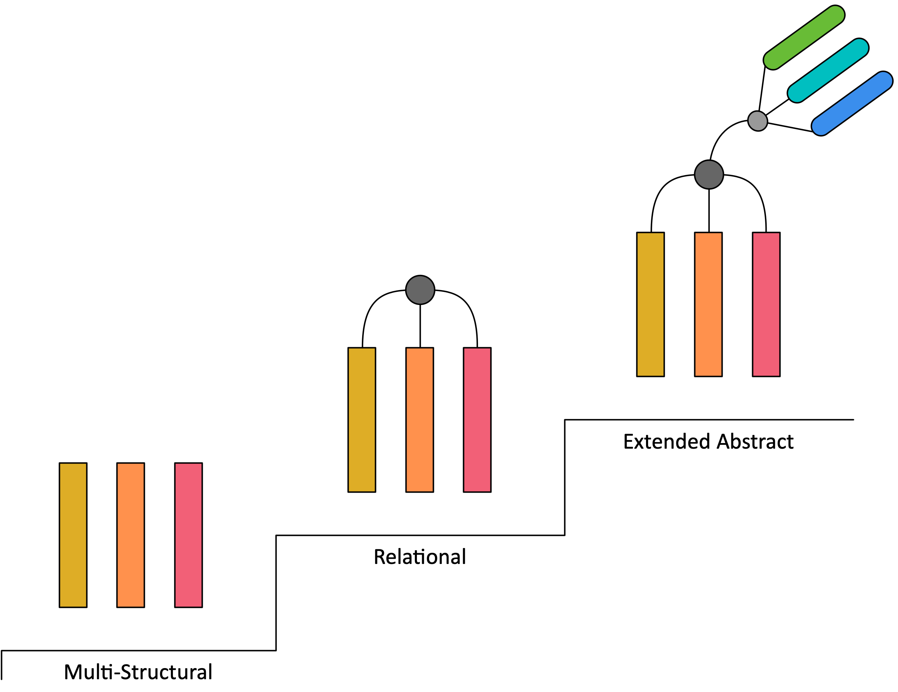

In the individual delivery, you need to deliver further evidence that you have reached the learning goals of the course and think independently about the course topics.
The subject of your reflection can be anything relevant to the course and its learning goals.
This means systems and system architectures, their description, the development process and the process during teamwork.
This part is highly individual. It depends on your personal observations and reflections, and it should be unique.
You need to provide a maximum of 3 written pages in which you reflect about selected issues that relate to the learning goals of the course.
You can decide what to write about, and you decide if you want to address a single point or several ones.
We recommend not to try to address more than 3 topics, because you should provide a certain depth to each of them and provide consistent arguments.
How to Make an Argument
No matter what you choose to write about, you need to make good arguments.
Good arguments are based on logically consistent reasoning, are based on facts and observations, are explained well and have an explicit conclusion.
You need to collect evidence for your argument. Explain situations that happened during the semester, point to diagrams or code, or point to the learning material.
Construct a claim, and explain it. Make sure the reader understands your point.
Discuss your claim. Consider counter-arguments, or tradeoffs, evidence against your argument.
Draw a conclusion, repeat or reinforce your main point.
Language
Of course, expressing yourself well will always be a benefit, and we encourage you to acquire excellent language skills. Also, check your delivery for typos and grammar. We will, however, ignore language issues as long as we understand what you mean.
Write Efficiently
Use repetition only carefully when it makes sense to do so, for instance to summarize or compare one point to an earlier one. Don't just repeat something because you are unsure if we got it.
We are going through your text carefully, so there is no danger that we miss an arguments. We are looking for them.
Use Paragraphs Strategically
A paragraph should only contain one main idea or argument. Outline this argument early on in the paragraph, and use the rest of the paragraph to develop the argument, provide evidence, discuss alternatives. For longer argumentations, use several paragraphs.
Levels
To understand what makes a good argument, we may consider the three highest levels in the SOLO taxonomy. This taxonomy is used to assess learning outcomes, but it also works when looking at arguments. For a good argumentation, you should aim for the level of extended abstract.

Multi-structural: You present multiple pieces of information, but they are not linked.
Relational: You present multiple pieces of information, and also provide links between them.
Extended Abstract: You present a reasonable multiple pieces of information, and also provide links between them, and extend your discussion beyond what was said in the course.
Look at your Sentences
You can also consider each of your sentences to get an indication of the quality of your argument. For some, it may be too restrictive when doing this before writing. So you may also do this after you have written a couple of sentences, to plan how to proceed.
The following type of sentences are examples for providing some information. Such sentences are useful to provide evidence and to lay the ground for further argumentation. Just make sure that you only include such sentences to support your argumentation, and not just fill up the page.
Rephrasing some of the content of the curriculum.
Explaining some parts of your specification.
Provide background information.
The following sentences are often examples for building relations between information. Such sentences are useful in the course of a discussion, to build up an argument.
Comparing alternatives.
Discussing benefits and drawbacks.
Now, make a statement with an idea that provides a more abstract view on your knowledge or extends it beyond what was already covered in the course. Examples for that are sentences like the following:
Analyzing causes for something.
Generalize from a specific situation to more general one.
Reasoning, drawing logic conclusions, developping an argument.
Examples for Topics
You should select the topic or topics to write about for yourself. You may also try to work on several topics, and then select the ones where you were most successful with the argumentation. There is no requirement that you cover all aspects, learning goals, or topics addressed in the course.
Ideally, chose a topic that you care about, or where you gained the most insights, as this will probably improve your argumentation. For this reason, it's probably not a good idea that we show you a list with possible topics, as this may limit your creativity and maybe keep you from writing about a more unique topic.
But we know that you will ask, so here is a list of examples and ideas anyway:
About the system design and architecture choices.
Quality of the state machine, correspondence between state machine and sequence diagram, or correspondence between state machine and implementation.
An overall look on the correspondence of the requirements, possibly improved ones, with the realized system.
Observations and insights into the development process.
The quality of your delivery, maybe a critique of it.
Your learning process, in relation to specific course concepts.
...any item of your choice, as long as they are connected to the learning goals of the course.
Grading
The individual delivery is part of your portfolio, and it will weigh around 30 % for the final grade. For the performance level, we will apply NTNU's general grading criteria. Notice the significance of independent thinking in the performance levels.
Final Hints
Be individual and unique. We not only recommend to work on your own, but also to not discuss your delivery with others.
The maximum length is 3 pages. You can add an appendix (within the same PDF file) that consists of screenshots of material that you can annotate. For instance, you can include a screenshot of a diagram and point out an issue that you refer to in your report.
Deliveries I1 and I2 can help you towards I3. Apart from providing feedback to the other teams, they should also have started a reflection process on your own work and learning process. You can therefore take up points you made in I1 and I2 and develop them.
You can take all teaching material, including all presentations, articles and the guest lectures as input. You can, of course, also gather information outside of the provided learning material if you see need and fit.
Revisit the learning goals of the course. They can be a valuable guide.
Of course, all material must be written by yourself. Copying from others or letting others copy from you is not allowed. All reflections must be based on your experiences in the course.
Delivery I3 is not meant as a feedback on the course. For this, please use any of the other channels for course feedback. The focus is your own learning, and reflection about it. Of course, if you develop a point that naturally includes some feedback about the course you may do so.
The recommended language for I3 is English. You can, however, also deliver in Norwegian, if you prefer.